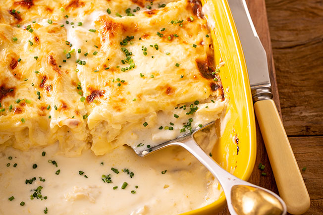

Lasanha de Bacalhau

This delicious recipe will receive many compliments from your friends.
Ingredients:
- 450g Bacalhau
- 1 Embalagem de massa para lasanha
- 1 folha de Louro
- 1 Cebola
- 1 Alho Francês
- 4 dentes de Alho
- 0.5 Copo de Vinho Branco
- qb Queijo da Ilha
- qb Coentros
- qb Azeite
Para o molho bechamel:
- 50g Margarina
- 500ml Leite
- 2 c. sopa Farinha
- qb Sal e Pimenta
- qb Noz-Moscada
Steps:
- Comece por cozer 2 postas de bacalhau em 500 ml de leite durante 15 minutos, acrescentando o aroma de 1 folha de louro.
- Reserve depois o leite devidamente coado, e separe o bacalhau em lascas.
- Entretanto, prepare um molho bechamel.
- Num tacho, derreta 50g de margarina, junte 2 colheres de sopa de farinha de trigo sem fermento e mexa, antes de adicionar o leite aos poucos.
- Tempere depois com noz-moscada, pimenta e sal, e deixe o molho cozinhar durante 10 minutos.
- Enquanto isso, aqueça 1 fio de azeite numa frigideira.
- Pique 1 cebola, coloque-a a refogar, faça o mesmo a 1 alho francês e a 4 dentes de alho, e tempere com pimenta e sal.
- Quando os legumes tiverem amolecido, adicione meio copo de vinho branco, e deixe o álcool evaporar e o molho reduzir.
- Com o molho bechamel e os legumes prontos, ligue o forno a 180ºC e aproveite para picar coentros, antes de montar a lasanha.
- Disponha primeiro um terço do molho bechamel, seguido de 1 folha de massa, de metade do refogado, e de metade das lascas de bacalhau.
- Repita o processo, polvilhe com os coentros picados, e termine com uma última folha de massa, o resto do molho bechamel e com queijo da ilha ralado.
- Tape a lasanha com papel de alumínio e leve ao forno durante 25 minutos. Passado esse tempo, destape e deixe gratinar durante 5 a 10 minutos.
- No final, não perca tempo e sirva esta lasanha de bacalhau enquanto estiver bem quente.